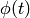
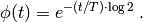
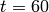
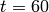

transcription_regulation : time dependent transcription regulation¶
Overview¶
The module cmepy.models.transcription_regulation defines a model of the transcription regulation system. This transcription regulation system was formulated by Goutsias [GOU05], and consists of 10 reactions:
![\textrm{RNA} &\xrightarrow{} \textrm{RNA} + \textrm{M} \; , \\
\textrm{M} & \xrightarrow{} \star \; , \\
\textrm{DNA-D} &\xrightarrow{} \textrm{RNA} + \textrm{DNA-D} \; , \\
\textrm{RNA} & \xrightarrow{} \star \; , \\
\textrm{DNA} + \textrm{D} &\xrightarrow{} \textrm{DNA-D} \; , \\
\textrm{DNA-D} &\xrightarrow{} \textrm{DNA} + \textrm{D} \; , \\
\textrm{DNA-D} + \textrm{D} &\xrightarrow{} \textrm{DNA-2D} \; , \\
\textrm{DNA-2D} &\xrightarrow{} \textrm{DNA-D} + \textrm{D} \; , \\
\textrm{M} + \textrm{M} &\xrightarrow{} \textrm{D} \; , \\
\textrm{D} &\xrightarrow{} \textrm{M} + \textrm{M}\; . \\](../_images/math/be492c3547d5a7811dc3b64014f33db5afe80e46.png)
Initially, the system has 2 copies of DNA, 2 copies of M, and 6 copies of D.
The propensity functions of these reactions are all elementary. See the source code below or Goutsias [GOU05] for the rate coefficients. However, the three reactions

that is, those reactions in the system involving the combination of two different molecules, have their propensities scaled by a time dependent factor , where

Here, the constant  is set to 35 minutes. See Goutsias [GOU05] for
further details.
is set to 35 minutes. See Goutsias [GOU05] for
further details.
Running the model¶
To solve this model in CmePy and plot some results, simply open the Python interpreter and type:
>>> from cmepy.models import transcription_regulation
>>> transcription_regulation.main()
The model is solved from  to 
using 60 equally-spaced time steps. The model is solved using a truncated state
space, but the state space truncation error is still less than 1 percent of
the total probability at the final time .
to 
using 60 equally-spaced time steps. The model is solved using a truncated state
space, but the state space truncation error is still less than 1 percent of
the total probability at the final time .
After solving the model, this script will display the the plots shown below.


Source¶
"""
the transcription regulation example, as formulated by:
@article{goutsias2005quasiequilibrium,
title={{Quasiequilibrium approximation of fast reaction
kinetics in stochastic biochemical systems}},
author={Goutsias, J.},
journal={The Journal of chemical physics},
volume={122},
pages={184102},
year={2005}
}
a time-independent approximation of this example was also considered by
@conference{burrage2006krylov,
title={{A Krylov-based finite state projection algorithm for
solving the chemical master equation arising in the
discrete modelling of biological systems}},
author={Burrage, K. and Hegland, M. and Macnamara, S. and Sidje, R.},
booktitle={Proc. of The AA Markov 150th Anniversary Meeting},
pages={21--37},
year={2006}
}
"""
import numpy
import cmepy.model
from cmepy.util import non_neg
def create_time_dependencies():
"""
returns time dependencies as dictionary of functions keyed
by sets of reaction indices
"""
avogadro_number = 6.0221415e23
cell_v_0 = 1.0e-15 # litres
k = avogadro_number*cell_v_0
cell_t = 35*60.0 # seconds
def phi(t):
return 1.0/(k*numpy.exp(numpy.log(2.0)*t/cell_t))
return {frozenset([4, 6, 8]) : phi}
def create_model(dna_count=2, rna_max=15, m_max=15, d_max=15):
# define mappings from state space to species copy counts
dna = lambda *x : x[0]
dna_d = lambda *x : x[1]
dna_2d = lambda *x : dna_count - x[0] - x[1]
rna = lambda *x : x[2]
m = lambda *x : x[3]
d = lambda *x : x[4]
# define reaction propensity constants
k = (
4.3e-2,
7.0e-4,
7.8e-2,
3.9e-3,
1.2e7,
4.791e-1,
1.2e5,
8.765e-12,
1.0e8,
0.5,
)
return cmepy.model.create(
name = 'Goutsias transcription regulation',
species = (
'DNA',
'DNA-D',
'DNA-2D',
'RNA',
'M',
'D',
),
species_counts = (
dna,
dna_d,
dna_2d,
rna,
m,
d,
),
reactions = (
'RNA -> RNA + M',
'M -> *',
'DNA-D -> RNA + DNA-D',
'RNA -> *',
'DNA + D -> DNA-D',
'DNA-D -> DNA + D',
'DNA-D + D -> DNA-2D',
'DNA-2D -> DNA-D + D',
'M + M -> D',
'D -> M + M',
),
propensities = (
lambda *x : k[0] * rna(*x),
lambda *x : k[1] * m(*x),
lambda *x : k[2] * dna_d(*x),
lambda *x : k[3] * rna(*x),
lambda *x : k[4] * dna(*x) * d(*x),
lambda *x : k[5] * dna_d(*x),
lambda *x : k[6] * dna_d(*x) * d(*x),
lambda *x : k[7] * dna_2d(*x),
lambda *x : k[8] * 0.5 * m(*x) * non_neg(m(*x) - 1),
lambda *x : k[9] * d(*x),
),
transitions = (
(0, 0, 0, 1, 0),
(0, 0, 0, -1, 0),
(0, 0, 1, 0, 0),
(0, 0, 1, 0, 0),
(-1, 1, 0, 0, -1),
(1, -1, 0, 0, 1),
(0, -1, 0, 0, -1),
(0, 1, 0, 0, 1),
(0, 0, 0, -2, 1),
(0, 0, 0, 2, -1),
),
shape = (dna_count+1, )*2 + (rna_max+1, m_max+1, d_max+1),
initial_state = (dna_count, 0, 0, 2, 6)
)
def main():
"""
solves transcription regulation model and plot results
"""
import cmepy.solver
import cmepy.recorder
m = create_model()
solver = cmepy.solver.create(
m,
sink = True,
time_dependencies = create_time_dependencies()
)
recorder = cmepy.recorder.create(
(m.species,
m.species_counts)
)
t_final = 60.0
time_steps = numpy.linspace(0.0, t_final, 61)
for t in time_steps:
solver.step(t)
p, p_sink = solver.y
print 't = %g; p_sink = %g' % (t, p_sink)
recorder.write(t, p)
cmepy.recorder.display_plots(
recorder
)
References
| [GOU05] | (1, 2, 3) Goutsias, J., Quasiequilibrium approximation of fast reaction kinetics in stochastic biochemical systems, Journal of Chemical Physics (2005), Vol 122. |